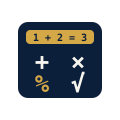

Modul Belajar Olimpiade
Materi tersusun per bab, dari dasar sampai soal lomba. Disertai cara cepat 10 detik dan latihan soal.

Aljabar & Manipulasi Bentuk Aljabar
Faktorisasi tingkat lanjut, persamaan simetris, dan metode substitusi tak tentu untuk OSN-K.
Teori Bilangan & Keterbagian Sisa (Modulo)
Sifat bilangan prima, FPB & KPK aljabar, dan aplikasi modulo pada sisa pembagian bilangan pangkat.
Geometri Bidang Datar & Dalil Menelaus
Sudut bertolak belakang, kesebangunan segitiga olimpiade, dan lingkaran singgung dalam/luar.
lock Terkunci · Buka untuk melihat materi dan latihan.
lock_open Buka Akses PremiumKombinatorika & Prinsip Sarang Burung (Pigeonhole)
Permutasi siklis, pembagian kelompok partisi, dan pembuktian keberadaan elemen unik.
lock Terkunci · Termasuk 50 soal latihan dan cara cepat 10 detik.
lock_open Buka Akses PremiumPertidaksamaan Cauchy-Schwarz & AM-GM
Trik pembuktian nilai minimum dan maksimum aljabar tanpa kalkulus tingkat madya.
lock Terkunci · Buka untuk melihat materi.
lock_open Buka Akses PremiumFungsi, Polinomial & Teorema Vieta
Akar-akar persamaan suku banyak, faktorisasi Horner, dan persamaan fungsi f(x+y).
lock Terkunci · Buka untuk melihat materi.
lock_open Buka Akses PremiumArsip Soal Olimpiade 2018–2025
Bedah analitis soal asli OSN-K, OSN-P, SASMO, AMO, hingga KSNR dengan metode pembuktian formal & trik cepat 10 detik.
Matematika SMP
40 butir soal seleksi asli per tahun disertai penguraian teorema bilangan, kongruensi modulo, dan segitiga pascal.
Singapore & Asian Schools Math Olympiad
Arsip bilingual (English-Indonesia) soal penalaran kreatif Section A (Multiple Choice) dan Section B (Non-routine problems).
Geometri Lanjutan & Teori Graf Provinsi
Latihan pembuktian analitis teorema Menelaus, Ceva, dan keterbagian aljabar untuk merebut tiket ke babak Nasional.
Belajar Pola Berpikir, Bukan Menghafal
Setiap materi dipecah jadi langkah kecil. Fokusnya supaya anak paham alasan di balik cara pengerjaan, bukan sekadar cepat menghitung.
Tingkatkan ke Paket Juara Olimpiade
Semua 12 modul terbuka. Tanya Olimpix Engine 50 kali sehari. Tryout CBT tanpa batas.